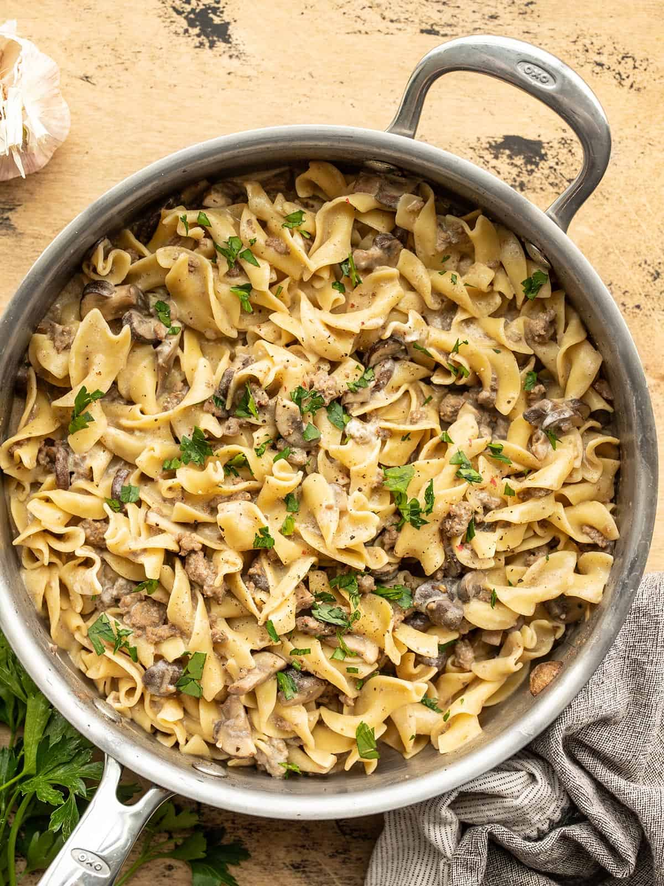

Beef Stroganoff
Recipe from Budgetbytes

Description
Traditional beef stroganoff is a Russian dish that features pieces of sautéed beef in a rich and creamy sauce, often served over pasta. However, my version here takes a few budget-friendly shortcuts. I use ground beef instead of steak (SO much cheaper), bulk it out with mushrooms, and turn the whole thing into an easy one-pot dinner. It comes to just $5.54 for four servings, and there’s very little prep, no separate pasta pot, and only one pan to clean, which makes this one especially friendly for beginners.
I also use the one-pot method in my American goulash, another old-school comfort food favorite made with ground beef, macaroni, and a tomato-based sauce. For this stroganoff, the egg noodles cook directly in the seasoned beef broth instead. This means they absorb all the savory flavor and naturally help the sauce thicken. Then I add a scoop of sour cream at the end for that familiar creamy tang. This recipe may not be traditional, but it’s quick, beginner-friendly, budget-friendly, and very easy to clean up after. I’ll happily take all four!
Ingredients
- 2 cloves garlic
- 2 Tbsp butter
- ½ lb. ground beef
- 8 oz. mushrooms
- ⅛ tsp black pepper (freshly cracked)
- 2 cups beef broth
- 1 Tbsp Worcestershire sauce
- ½ tsp Dijon mustard
- 8 oz. wide egg noodles
- ⅓ cup sour cream
- 1 Tbsp parsley (chopped (optional))
Steps
- Mince the garlic. Add the garlic and butter to a large pot or skillet and sauté over medium heat for about one minute, or until the garlic is soft and fragrant.
- Add the ground beef and continue to sauté until it is fully browned.
- While the beef is browning, slice the mushrooms. Add the sliced mushrooms and some freshly cracked pepper to the pot with the beef. Continue to sauté until the mushrooms are soft (about five minutes).
- Add the uncooked egg noodles to the pot along with the beef broth, Worcestershire sauce, and Dijon mustard. Stir to combine. The liquid will not fully cover the noodles, but that's okay.
- Place a lid on the pot and allow the liquid to come up to a boil over medium-high heat. As soon as it reaches a boil, give the pot a stir, replace the lid, and reduce the heat to low. Allow the pot to simmer on low heat for about 7-10 minutes, stirring occasionally and replacing the lid every couple of minutes. After 7-10 minutes the pasta should be tender and most of the liquid absorbed.
- Once the noodles are tender, add the sour cream and fold it into the noodles until everything is rich and creamy. Give the noodles a taste and add extra salt or pepper, if needed. Roughly chop a handful of parsley leaves and sprinkle over top. Serve hot.
Home